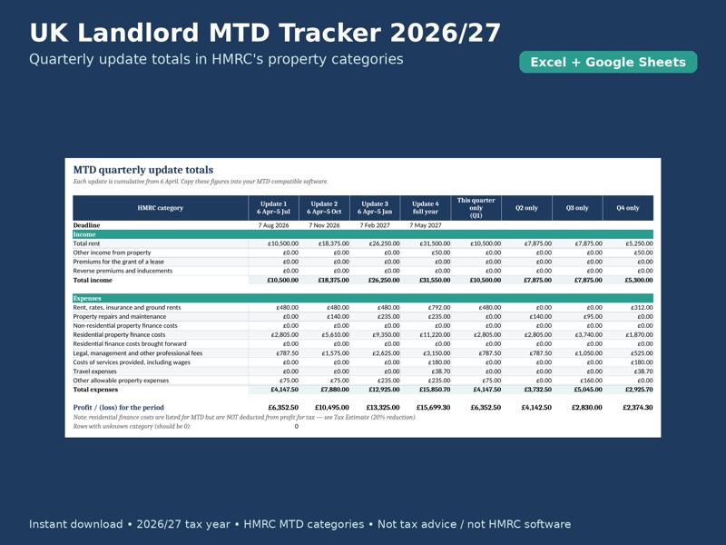
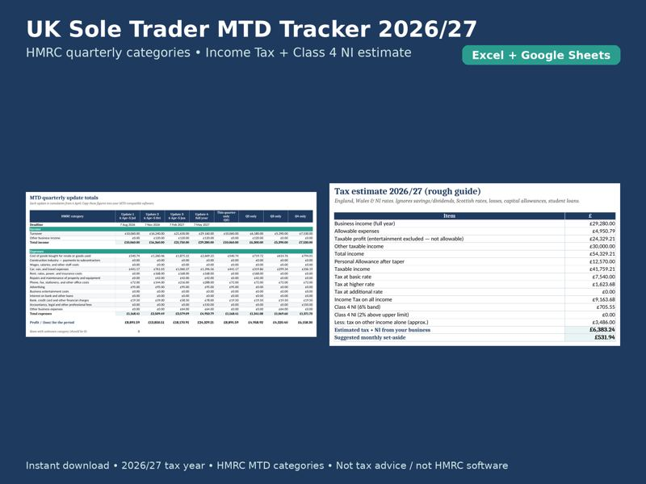
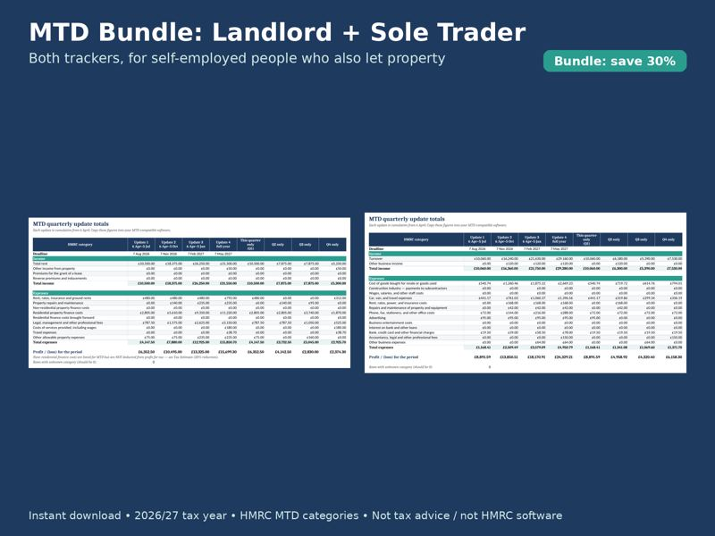

QuarterReady
From 6 April 2027 around 1,077,000 more sole traders and landlords must send HMRC quarterly updates (GOV.UK). Drop in your bank CSV and get the totals Making Tax Digital asks for. No Xero. No retyping.
Get the free April 2027 checklist"Doing manual data entry from your bank statement to a spreadsheet 4 times a year… is just plain tedious." – sole trader on Reddit
Choose a bank CSV with columns for date, description and amount.

Rent, expenses and quarterly totals per property, portfolio dashboard, tax estimate. Excel.
£9.99
Buy now
Income, HMRC expense categories, mileage, quarterly totals. Excel.
£7.99
Buy now
Both trackers, for people with rental and self-employed income.
£12.49
Buy the bundleThese spreadsheets are record-keeping tools, not tax advice and not HMRC-recognised software. To submit Making Tax Digital updates you still need HMRC-compatible (e.g. bridging) software. Check all figures; speak to an accountant if unsure.
Plain-English, one page: dates, thresholds, what to set up now. Plus early access to QuarterReady.
QuarterReady is a record-sorting tool, not tax advice and not HMRC software. Check figures before submitting.